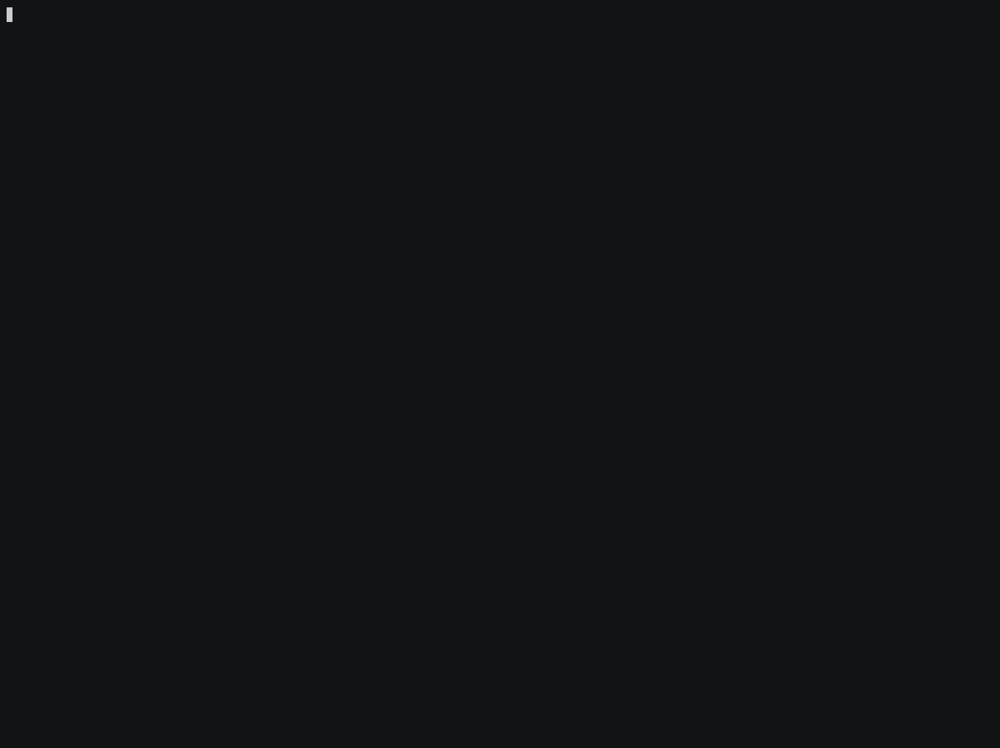

A skill that reads clean can behave badly. It reaches for your
SSH key, POSTs it to a collector, runs rm -rf on your repo.
Static scanners check it once, before install. Airlock sits in the call path
and decides this call, right now, against a least-privilege policy,
for Claude Code, Cursor and every other agent you run.

curl -fsSL https://raw.githubusercontent.com/cyberbobas/airlock/main/install.sh | sh
irm https://raw.githubusercontent.com/cyberbobas/airlock/main/install.ps1 | iex
pipx install airlock-agent # or: pip install airlock-agent brew install airlock # macOS (coming with launch)
Then, one command that touches nothing of yours:
airlock demo # watch it stop a key-theft, live airlock init # wire it into every agent you run airlock doctor # green checks = you're covered
Refuses by what a call touches: a secret path, a known collector, download-and-execute. It never tries to read intent.
Run a week in learn mode, then airlock policy propose writes
the narrowest policy that covers what your agents actually did.
Every decision lands in a hash-chained, signable log. airlock
verify proves nothing was rewritten.
airlock uninstall restores every file it touched
byte-for-byte. Nothing shows up in your git diff.
One command wraps the MCP servers of every agent below, so their tool calls run through the gate (verified against the installed CLIs). Claude Code additionally gets its native file and shell tools gated, through its PreToolUse hook; for the other agents, Airlock gates their MCP calls, not yet their built-in tools.
Airlock does not stop prompt injection. Nothing does. It gates the action the injection asks for. Egress is argument level. An agent with a shell can start a server outside the proxy. These boundaries are documented, not hidden.